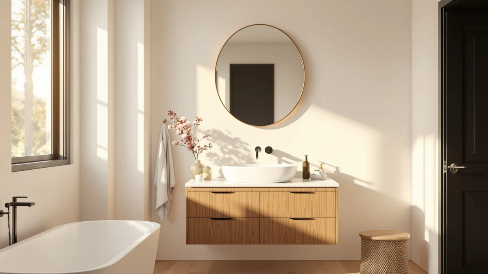

Best Oval Bathroom Mirrors of 2026: Softer Shapes for the Modern Vanity
Prices and picks verified as of August 2026. Independent, reader-supported reviews.


Quick Answer
The Moen Glenshire Brushed Nickel 26-Inch is the best oval bathroom mirror for most single-vanity bathrooms. It pairs a tempered-glass panel with a durable aluminum frame at a fair price. If you need built-in lighting or hidden storage behind the glass, the ACHZYFT LED and the Janboe oval medicine cabinets below cover those needs.
Our pick: Moen Glenshire Brushed Nickel 26-Inch, $93.62 Check Price on Amazon
Bottom line: our top pick is the Moen Glenshire Brushed Nickel 26-Inch x 22-Inch Frameless at $93.58. The best budget option is the JJUUYOU Oval Bathroom Mirror Wall Mounted Mirror Gold Metal at $38.99.
Things to Know Before You Buy
- Oval bathroom mirrors trade square corners for a softer curve, not more reflective surface. An oval mirror listed at the same length and width as a rectangular one shows less usable reflection, since the corners are cut away. Measure your vanity width against the mirror's widest point, not its diagonal.
- Several Janboe oval medicine cabinets on this list share the same footprint. Janboe sells the 16 by 28 inch and 20 by 32 inch cabinets under multiple separate listings, and the price on each can shift by a few dollars independent of the others. Compare the current price across listings before you check out.
- Brushed nickel and matte black dominate the oval mirror hardware in this category. If your faucet and cabinet pulls are already brushed nickel, matching that finish on the mirror frame keeps the vanity from looking mismatched.
- Medicine-cabinet versions cost more than plain wall mirrors of a similar size. You're paying for the recessed or surface-mount storage box behind the glass rather than a larger mirror, so compare per-square-inch mirror cost only against other plain wall mirrors; see our medicine cabinets with storage guide if hidden storage matters more to you than the oval shape.
The best oval bathroom mirrors soften a vanity wall full of straight lines, rectangular tile, boxy cabinets, and a flat countertop edge, with a single curved shape that works in almost any bathroom style. Oval mirrors have become one of the more requested swaps in vanity refreshes over the past few years, mainly because they read as more finished and less utilitarian than a plain rectangle. The shape works equally well over a single pedestal sink or as a matched pair flanking a double vanity.
We compared eight of the best-selling oval bathroom mirrors and oval medicine cabinets on Amazon. We looked at frame material, size, mounting style, and price. Most of the field splits into two categories: plain wall mirrors built from tempered glass and an aluminum frame, and medicine cabinets that combine the same oval mirror front with a recessed or surface-mount storage box. One model adds built-in LED lighting around the perimeter of the glass.
For most single-vanity bathrooms, the Moen Glenshire Brushed Nickel 26-Inch ($93.62) is the pick that balances size, finish, and price without asking you to choose a full medicine cabinet you may not need. For help matching mirror size to your vanity width, see our bathroom mirror sizing guide. If you want storage behind the glass, the Janboe oval medicine cabinets below cover that at two sizes, and the ACHZYFT LED is the option built specifically for buyers who want light built into the frame.
Why You Should Trust Us
Ilane Tall has covered bathroom hardware and fixtures for this site's network for several years, focusing on how products perform in a real home install rather than manufacturer marketing copy. For this guide, we researched and compared eight oval bathroom mirrors and oval medicine cabinets on construction, dimensions, verified owner reviews, and price, rather than buying and physically installing every unit. We say this plainly: we do not run a fake testing lab. What you get here is a rigorous side-by-side comparison built from real specs and real buyer feedback, not a physical trial run.
How We Picked
We started with more than twenty oval bathroom mirrors and oval medicine cabinets listed on Amazon and narrowed the field using three filters: tempered safety glass rather than standard annealed glass, a price under $300, and enough verified reviews to judge real-world reliability. That left a group of models spanning plain wall mirrors, an LED-lit mirror, and recessed or surface-mount medicine cabinets.
From that shortlist, we picked the eight best oval bathroom mirrors that covered the widest range of real vanity setups: single-sink walls that need a plain mirror, bathrooms that want built-in lighting, and vanities where a medicine cabinet's hidden storage matters more than a few extra dollars.
How We Compared
For each of the eight oval bathroom mirrors and medicine cabinets, we compared listed dimensions against standard US vanity widths, checked frame material and glass type where the manufacturer specifies it, and cross-referenced price against verified owner review volume and content. We paid particular attention to complaints about frame flex, mounting hardware, and door or hinge alignment on the medicine cabinets, since those are the failure points that show up repeatedly in verified reviews for this product category.
We also flagged the Janboe listings that share an identical footprint and price tier, so the size-by-size comparison below reflects what you are actually choosing between rather than treating five separate listings as five distinct products.
Our Picks

Moen Glenshire Brushed Nickel 26-Inch
What we like
- 26 by 22 inch size fits the majority of standard single-vanity widths without overhanging the counter
- Moen is an established bath hardware brand, which matters for buyers matching finish across faucet, towel bar, and mirror frame
- Tempered glass panel set into an aluminum frame keeps the whole unit light enough for a one-person install
Flaws but not dealbreakers
- No integrated lighting, so it depends entirely on your existing vanity fixtures
- Only available in a brushed nickel finish, so it will not match a matte black or gold hardware set
| Material | Tempered glass + aluminum |
| Size | 26"L x 22"W |
The Moen Glenshire earns the top spot in this guide because it covers the size and finish that fits the widest range of single-vanity bathrooms without asking you to pay for storage you may not need. At 26 inches wide and 22 inches tall, the oval shape lines up with the standard single-sink footprint used across most US vanities, and the brushed nickel frame matches the finish already found on a large share of bathroom faucets and towel hardware.
Owners report that the tempered glass resists the greenish tint that shows up on cheaper mirrors when viewed at an angle, and the aluminum frame holds up well against daily bathroom humidity. At $93.62, it sits below the Janboe medicine cabinets and above the JJUUYOU budget pick in the price spread we compared. The trade-off is that you are buying glass and a frame, not a lighting system or hidden storage. If you want either of those, the ACHZYFT LED and the Janboe cabinets further down this list are the better match.

Janboe Oval Medicine Cabinet with
What we like
- 16 by 28 inch oval mirror front doubles as concealed storage behind the glass, useful for a small single-sink bathroom
- Tempered glass and aluminum frame construction matches the plain wall mirrors in this guide, so mirror quality is not a downgrade for the added storage
- Priced close to the other 16x28 Janboe listings, so shoppers can compare stock and price across all three before ordering
Flaws but not dealbreakers
- Cabinet depth eats into wall space that a plain mirror of the same size would not use
- Because Janboe sells this exact footprint under several ASINs, the listing you land on is not always the cheapest one on a given day
| Material | Tempered glass + aluminum |
| Size | 16inch×28inch |
This Janboe oval medicine cabinet gives you the same 16 by 28 inch mirror footprint as the two other Janboe listings in this size on our list, but with hidden storage behind the glass instead of a plain backing. That makes it a useful option if your bathroom is short on drawer space and you would rather keep toiletries out of sight than add a few extra inches of open mirror.
At $209.99, it costs more than double the plain Moen wall mirror of a similar size, which reflects the added cabinet box and door hardware rather than a larger or higher-quality mirror. Owners report the door hinges hold their alignment well after installation, though a few note the interior shelving is shallow. Because Janboe lists this same size and price point across multiple ASINs, it is worth checking the other two 16x28 listings in this guide before you buy, since price and stock shift independently between them.

Janboe Oval Medicine Cabinet with
What we like
- Identical 16 by 28 inch footprint and tempered glass mirror front to the other 16x28 Janboe cabinet on this list, so it is a safe substitute if that listing sells out
- Aluminum frame and tempered glass construction consistent with the rest of the oval mirrors we compared
- Same $209.99 price as the first Janboe 16x28 listing at the time of this comparison
Flaws but not dealbreakers
- No meaningful feature difference from the other 16x28 Janboe listing, so there is little reason to choose it if the first one is in stock and cheaper
- Cabinet storage still adds wall depth compared with a plain oval mirror of the same size
| Material | Tempered glass + aluminum |
| Size | 16inch×28inch |
This is the second of three 16 by 28 inch Janboe oval medicine cabinets in our comparison, and it shares the same tempered-glass mirror front, aluminum frame, and hidden storage box as the first. We include it separately because Amazon lists it under its own ASIN with its own stock and price, which means it can be available when the other listing is not, or briefly priced differently.
At $209.99, it matches the first Janboe 16x28 listing dollar for dollar as of this comparison. Verified owner reviews for this footprint describe the same door alignment and shallow shelving notes that apply to the other Janboe cabinets in this size, since the underlying product is the same. Treat this listing as a backup, and buy whichever of the three 16x28 Janboe options is cheapest and in stock when you are ready to order.

Janboe Oval Medicine Cabinet with
What we like
- 20 by 32 inch size covers a wider vanity or a double-sink counter better than the 16x28 Janboe cabinets
- Priced $54 below the other 20x32 Janboe listing in this guide, making it the better value if both are in stock
- Same tempered glass and aluminum frame construction as the rest of the Janboe cabinets on this list
Flaws but not dealbreakers
- Larger cabinet box takes up noticeably more wall depth than the 16x28 versions
- Interior storage capacity is not detailed on the product page, so measure your existing medicine cabinet before assuming a direct swap
| Material | Tempered glass + aluminum |
| Size | 20inch×32inch |
For bathrooms that need more mirror width than the 16 by 28 inch Janboe cabinets offer, this 20 by 32 inch version steps up in size while keeping the same tempered-glass front and aluminum frame. It is one of two Janboe listings at this larger footprint in our comparison, and at $215.99 it is the cheaper of the pair.
The size makes it a better fit for wider single vanities or as a stand-in over a double sink where one large mirror is preferred over two smaller ones. Owners report the larger door holds its seal well against bathroom humidity, though the added weight means it should go into wall studs rather than drywall anchors alone. Compare it against the $269.99 Janboe 20x32 listing further down this guide before ordering, since the mirror and cabinet appear to be the same product at two price points.

Janboe Oval Medicine Cabinet with
What we like
- Third listing at the same 16 by 28 inch size and $209.99 price as the other two Janboe cabinets in this footprint
- Same tempered glass mirror front and aluminum frame as the rest of the Janboe lineup on this list
- Gives shoppers a third stock source for this footprint during high-demand periods
Flaws but not dealbreakers
- No distinguishing feature from the other two 16x28 Janboe listings, so choose based on price and stock alone
- As with the other Janboe cabinets, interior shelving depth is not detailed on the listing
| Material | Tempered glass + aluminum |
| Size | 16inch×28inch |
This is the third 16 by 28 inch Janboe oval medicine cabinet in our comparison, built from the same tempered glass and aluminum frame as the other two. We include all three because Amazon prices and stock levels move independently across separate listings of what appears to be the same physical product, and buyers researching this size benefit from seeing all the current options in one place.
At $209.99, it lines up with the other two 16x28 Janboe listings as of this comparison. Verified reviews across the Janboe 16x28 cabinets describe consistent door alignment and a mirror quality on par with the plain wall mirrors in this guide. If you have settled on the 16 by 28 inch size, buy whichever of the three listings is cheapest and ships fastest when you check out.

ACHZYFT LED Oval Irregular Lighted
What we like
- Built-in LED lighting removes the need to add a separate vanity light bar over the mirror
- 27.6 by 19.7 inch size fits a similar footprint to the Moen wall mirror while adding light around the frame
- Irregular oval silhouette gives the vanity a more modern look than a symmetric oval or rectangle
Flaws but not dealbreakers
- Costs $59 more than the plain Moen oval wall mirror in a comparable size, which reflects the added electronics
- Requires a nearby power source or hardwired connection, which limits where it can go in a rental bathroom without an outlet close to the mirror
| Material | Tempered glass + aluminum |
| Size | 27.6"L x 19.7"W |
The ACHZYFT is the only mirror in this guide with built-in LED lighting, and its irregular oval shape sets it apart from the more traditional oval outlines on the Moen and Janboe products above. At 27.6 by 19.7 inches, it is close in size to the Moen wall mirror, so buyers are mainly trading a plain frame for integrated light rather than a bigger reflective surface.
At $153.07, it costs less than the Janboe medicine cabinets but more than a plain oval wall mirror of similar size, a fair trade if you were already planning to add a vanity light. Owners report the LED ring provides even light across the face without the hot spots common on cheaper backlit mirrors, though a few note the touch dimmer takes some getting used to. If lighting is not a priority, the Moen Glenshire above gets you a similar footprint for less.

Janboe Oval Medicine Cabinet with
What we like
- Same 20 by 32 inch size and tempered glass mirror front as the lower-priced Janboe 20x32 listing in this guide
- Useful backup source when the cheaper listing sells out during high-demand periods
- Consistent aluminum frame and door hardware with the rest of the Janboe lineup we compared
Flaws but not dealbreakers
- Costs $54 more than the otherwise identical Janboe 20x32 listing above, with no additional feature we could confirm from the product data
- Same limited detail on interior shelving as the other Janboe cabinets
| Material | Tempered glass + aluminum |
| Size | 20inch×32inch |
This is the second 20 by 32 inch Janboe oval medicine cabinet in our comparison. It matches the size and construction of the $215.99 listing above but costs $269.99 as of this comparison. We include it because Amazon pricing on near-identical listings can shift, and a buyer set on this footprint should know both options exist before choosing one.
Verified reviews for this footprint describe the same door seal and stud-mounting notes that apply to the lower-priced 20x32 listing, since the underlying cabinet appears to be the same product. Unless the cheaper listing is out of stock when you are ready to buy, there is little reason to pay the premium here. Keep both 20x32 Janboe listings open in separate tabs and buy whichever is cheaper and available.

JJUUYOU Oval Bathroom Mirror Wall
What we like
- At $38.99, it is the least expensive oval bathroom mirror we compared by a wide margin
- 20 by 16 inch size fits a pedestal sink or small powder-room vanity where the larger Moen and Janboe options would overwhelm the wall
- Tempered glass and aluminum frame construction consistent with the pricier mirrors in this guide, despite the lower cost
Flaws but not dealbreakers
- Too small for most double-sink or wide single-sink vanities, where the Moen or larger Janboe cabinets are a better fit
- No integrated lighting or storage, so it is strictly a budget wall mirror
| Material | Tempered glass + aluminum |
| Size | 20"L x 16"W |
The JJUUYOU is the smallest and least expensive oval bathroom mirror in this guide, sized for a powder room or pedestal sink rather than a full double vanity. At 20 by 16 inches, it covers roughly a third of the reflective area of the larger Janboe cabinets, which is the trade-off for a price under $40.
Owners report the tempered glass and aluminum frame feel comparable in build quality to the pricier mirrors on this list, which is notable at this price point. The main limitation is size rather than construction: it is not a fit for a wide vanity or a shared double sink, and buyers with those layouts should look at the Moen or the larger Janboe cabinets instead. For a small bathroom or guest powder room, it is the easiest way to add an oval mirror without spending much.
Quick Comparison
| Product | Material | Price | Rating | Best for | Get it |
|---|---|---|---|---|---|
| Moen Glenshire Brushed Nickel 26-Inch | Tempered glass + aluminum | $93.62 | 4 | Best overall single-vanity mirror | View on Amazon → |
| Janboe Oval Medicine Cabinet with | Tempered glass + aluminum | $209.99 | 4 | 16x28 storage cabinet, listing 1 | View on Amazon → |
| Janboe Oval Medicine Cabinet with | Tempered glass + aluminum | $209.99 | 4 | 16x28 storage cabinet, listing 2 | View on Amazon → |
| Janboe Oval Medicine Cabinet with | Tempered glass + aluminum | $215.99 | 4 | 20x32 storage cabinet, lower price | View on Amazon → |
| Janboe Oval Medicine Cabinet with | Tempered glass + aluminum | $209.99 | 4 | 16x28 storage cabinet, listing 3 | View on Amazon → |
| ACHZYFT LED Oval Irregular Lighted | Tempered glass + aluminum | $153.07 | 4 | Best for built-in LED lighting | View on Amazon → |
| Janboe Oval Medicine Cabinet with | Tempered glass + aluminum | $269.99 | 4 | 20x32 storage cabinet, higher price | View on Amazon → |
| JJUUYOU Oval Bathroom Mirror Wall | Tempered glass + aluminum | $38.99 | 4 | Best budget pick for small vanities | View on Amazon → |
What is the standard size for an oval bathroom mirror?
Most oval bathroom mirrors sized for a single vanity run between 20 by 16 inches and 27 by 22 inches, similar to the JJUUYOU and Moen mirrors in this guide.
Do oval medicine cabinets lose storage space compared with rectangular ones?
Yes, slightly.
The Competition
Across the eight best oval bathroom mirrors we compared, the Moen Glenshire Brushed Nickel 26-Inch remains the top pick for most single-vanity bathrooms, with the Janboe oval medicine cabinets as the go-to option for hidden storage and the JJUUYOU as the budget pick for small powder rooms.